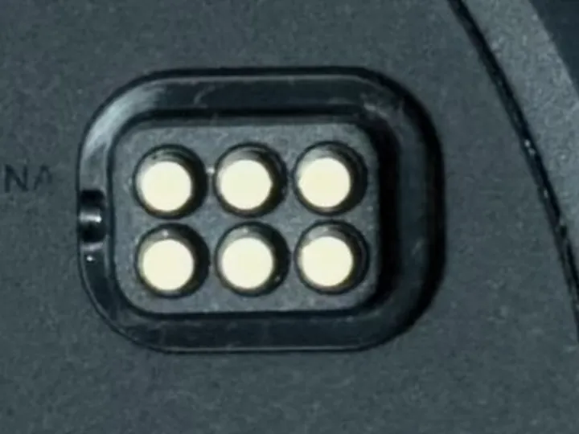
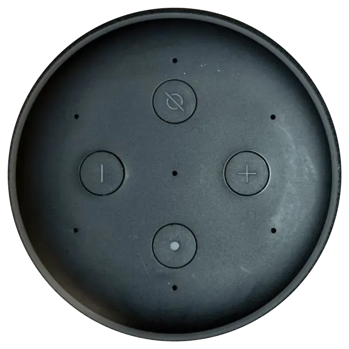

Step 1 of 6
Browser check
This page talks to the Echo over USB. Nothing is uploaded.
- WebUSB…
- Secure page…
Windows: the WinUSB driver
The browser can only open the Echo through the WinUSB driver. If fastboot already works with this
Echo on this PC, it is installed. Both phases use the same USB ID, so one driver covers both.
If the Echo is missing from the browser's list, or you get "Access denied":
- Start Kaeru fastboot (hold Action, plug in power). Device Manager shows the Echo as Android Bootloader
Interface, Android ADB Interface or an unknown device, USB ID
0BB4:0C01. - Install the driver, either way:
- Zadig: pick
0BB4 0C01, choose WinUSB, press Install Driver. - Google USB Driver:
Update driver → Browse my computer → Let me pick → Have Disk →
android_winusb.inf→ Android Bootloader Interface.
- Zadig: pick
- Replug the Echo, and close anything else using it, such as
fastboot.
Linux: USB permissions
If you get "Access denied", save this udev rule as /etc/udev/rules.d/51-fastboot.rules:
SUBSYSTEM=="usb", ATTR{idVendor}=="0bb4", ATTR{idProduct}=="0c01", TAG+="uaccess"
Then run sudo udevadm control --reload and replug.
Step 2 of 6
Before you start
What you need, and what this changes on the Echo.
What you need
- An Echo Plus 2nd gen, already unlocked with Kaeru fastboot (hold Action while plugging in power). This page unlocks nothing: see Prerequisites.
- Your own
boot_adump from the unlock. It is your way back. - USB on the contacts underneath (D+, D−, GND), for example with the project's pogo-pin jig.
- The two images (next step).

| Contact | Signal | Connect |
|---|---|---|
| top middle (TM4) | USB D+ | yes |
| top right (TM5) | USB D− | yes |
| bottom middle (TM37) | ground | yes |
| bottom right (TM33) | about 17 V, from the power adapter | never |
| top left (TM45) | USB ID | no |
| bottom left (TM35) | unknown, probably factory USB power | no |

pogo-jig/): only D+, D− and GND are wired.The bottom right contact carries about 17 V. Never connect or bridge it.
What gets written
boot_a← lidar-uboot.imgsystem_b← lidar-test-system.ext4
Fire OS no longer starts afterwards. Its system on system_a stays untouched (lidar reads the Wi-Fi
firmware and speaker tuning from it), so flashing your boot_a dump through Kaeru fastboot brings it back.
Nothing else is written; the installer refuses any other partition, and Kaeru fastboot stays available for
recovery. Later versions will also use system_a for updates: they will ask first and offer to save a full Fire OS
image, without which there is no way back.
Fire OS normally runs from system_a. If yours runs from system_b, stop: this page
would erase it. Install by hand with system_a as the install guide describes.
Step 3 of 6
Images
Get the two images of the latest release. They stay on this computer.
Latest release
lookingAsking GitHub for the latest release…
Or pick files you have
- U-Boot:missing
lidar-uboot.img - System:missing
lidar-test-system.ext4
Images you built yourself
Your own builds (in out/) show as "not verified". To check them, write a checksum file in
out/ and pick it here:
sha256sum lidar-uboot.img lidar-test-system.ext4 > SHA256SUMS
Step 4 of 6 · phase 1
U-Boot
lidar-uboot.img to boot_a, through Kaeru's fastboot.
Start Kaeru fastboot
- Unplug power. Leave the USB connected.
- Hold Action (the dot) and plug in power. Keep holding a few seconds.
- Press Connect and pick the device.

Flash
Step 5 of 6 · phase 2
System
lidar-test-system.ext4 to system_b, through U-Boot's fastboot. It becomes the boot slot.
Start U-Boot fastboot
After phase 1, U-Boot usually opens its fastboot by itself, since there is no lidar system to boot yet. If not:
- Unplug power. Leave the USB connected.
- Hold Volume Up (+) and plug in power. Keep holding a few seconds.
- Press Connect and pick the device.
Flash
Step 6 of 6
Done
The Echo is booting lidar.
Open the web interface
- Leave the USB connected: the Echo appears as a USB network adapter (and a serial port).
- The Echo is
169.254.7.2. Give that adapter another link-local address, for example169.254.7.1, netmask255.255.0.0; many systems do this by themselves. - Open http://169.254.7.2/ for the setup wizard.
PC 169.254.x.y ═══ USB network ═══ 169.254.7.2 Echo → http://169.254.7.2/
If something is wrong
- U-Boot fastboot: hold Volume Up while plugging in power, then repeat the System step.
- Kaeru fastboot: hold Action while plugging in power;
fastboot flash boot_a <your boot_a dump>restores the stock boot path. - More in the install guide.